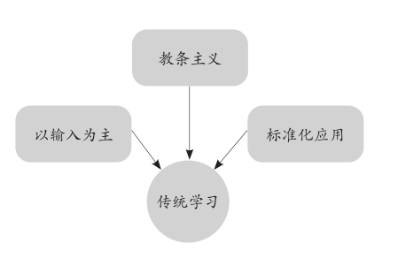

第一章
掌握一门知识有多难
我的好朋友、国内一家商业机构的高管唐先生，他的儿子小唐今年25岁，即将从美国普林斯顿大学毕业。在一次聚会中，谈到“未来发展”的话题，小唐十分干脆地拒绝了父亲的安排，向大家宣布他将自己成立一个小型团队，投身于国内的环保产业，而且他已为此做好了充分的准备。
引起我注意的不仅是小唐的傲人成绩和早熟的职业规划能力，还有他的学习方法。从中学开始，小唐就拥有自己的学习小组，每个学习小组都代表了不同的兴趣和方向。比如：商业管理小组，证券投资小组，IT技术小组，还有科学理论和环保知识小组。他与不同的老师和同学在小组中做针对性的讨论，了解这些领域是否合乎胃口和兴趣，储备相关的知识。
但到了大学时，他的学习小组只剩下了两个：环保和商业管理。他不准备子承父业，通过5到8年的学习，他认为自己的兴趣是环保。即使在商业管理方面也积累了出色的能力，或许仍然可能涉足于此，也只会是一条帮他赚钱的渠道，而不是他今后的主业。
小唐的这种学习方法与传统的学校模式迥然有异。他有目的地主动学习，在小组讨论的基础上不断地接触新信息，总结分析，消化吸收，再做出选择。这和本书倡导的费曼学习法一脉相承。
唐先生感慨地说：“我们那代人的学习是工业化的，就像一件流水线上的产品，没多少选择。因为那时信息少，知识面狭窄，我们只是去学习必须掌握的东西，然后再走一条别无选择的道路去运用这些知识。可是现在不同了，你能想象一个普通的行业也有几百种选择吗？学习不再是那么简单的事情。”
两种学习，你是哪一种？
在今天这个时代，学会一种新游戏越来越容易，可掌握一门新知识却越来越难。为什么大部分人学而不得？传统的学习方法是我们大多数人正在使用的方法，它具有三个特点。第一，以输入为主。死记硬背，或叠加阅读量，量变达成质变。第二，教条主义。盲目崇信书上的理论或框架，视野狭窄。第三，标准化应用。严格按照学到的知识去实践，遇到问题生搬硬套，缺乏创新。

以输入为主——死记硬背。优点是能在短时间内积淀尽可能多的信息，学到大量的知识点。缺点是内容留存率低，今天记住的东西过几天便“十不留三”。
教条主义——老师/书上说什么就是什么。优点是节省接受知识的时间，不加以怀疑地全盘接收一种理论或知识点。缺点是屏蔽了其他的可能性，缩小了自己的视野。
标准化应用——生搬硬套。优点是快速和高效地将学到的知识落地，前提是必须碰到一个与所学理论彼此匹配的场景。缺点是因为缺乏变通而导致的水土不服，一旦与所知所学条件有异，或场景变换，知识就无法落地。
提到传统的学习思路，我们第一时间就会想到机械式背诵这种方法，它是输入式学习的强力工具，也是在家庭和学校教育中被广泛采用的一种思路。中学时代，在高考前为了学好英语，有几个人没有彻夜朗读和疯狂地背诵过单词呢？我当年的一位同学曾经每晚读、背到凌晨，连续坚持两个月，最终发烧入院。为了背唐诗，小时候我也曾经头昏脑涨。幸运的是，在那些适合重复记忆的知识上，只要能坚持下来，它还是有效果的。
机械式背诵这种方式就非常契合上述提到的三个特点，它的唯一目的就是输入，追求在最短的时间内让人记住最多的知识，然后在考试的场景中过关（标准化应用）。
但是，随着时代的进步、社会节奏的加快和互联网的发展，学习这件事也开始进化。过去的方式正逐渐暴露出弊端，它仍然承担着学习的过程中一些重要的使命，但已不能帮助人们仅依靠传统的学习方法便让自己成为“新时代的知识精英”。
小唐的成功是另一种学习：用时少，效率高，结果好。他的父亲唐先生无疑是现代社会的知识精英，小唐本可以沿着一条传统的学习之路，便可轻松地承袭父亲80%的资源。但他考虑得更长远：
假如我失去父亲的庇护，我的学习还叫“学习”吗？我学到的成果是否是真正有价值的“成果”？
我们从英语角、汉语角这种形式中也能看到更好的学习思维的影子。对话，与任何一个可能的人对话，阐述你对一门或多门知识的见解，难道不是一个更好的、印象深刻的方法吗？和学习小组类似，体现了学习的最终本质应该是输出而不是输入。当你将输出作为输入的辅助工具时，学习的效果可以立时提升百倍。我一直认为，升级自己的思维，明确好方向，学习就从来都是一件很简单的事情。
“在线学习”是费曼学习法得以贯彻的一种体现，亦是一个重要的应用场景。当你独自一人面对一台电脑和浩瀚无际的互联网信息时，老师起到的作用是微乎其微的，你如何快速汲取到自己需要的知识？怎样验证所学知识的有效性？你是否清楚这些知识点的问题所在？如何自律、拟订计划和做好时间管理？传统思路在这时遇到了不可逾越的壁垒，我们必须对自己来一场学习变革。
好消息是，只要找对了方法，学习就没有那么难！
与真实的世界建立有效联系
我们还需要明白了解知识、掌握知识的目的。
认真想一想，你为什么要掌握一门知识呢？难道只是为了把它解构出来写进笔记，整理成万能公式，在考试中得一个满分吗？那次聚会上，我和小唐聊得非常愉快，看到了更多让我惊讶之处。小唐对于知识的理解比同龄人明显高出了好几个层次。
他说：“掌握知识很难，罪魁祸首是人的学习惯性，我们天生以为学习就是去一张纸上画出未来，好像知识对当下是无用的，对未来才是无价之宝。学习一门知识是为了建设自己的未来。这个设想大错特错。”
这句话让我想起自己的中学和大学时代，那时我和周围的同学的确都有这种想法，包括老师在内。大家脚下踩着一片云，喜欢向上看，很少向下看。我们会想：没人喜欢学习，人性是懒惰的，学习是反人性的事情。为什么我要如此努力？因为我们要让自己的未来获取竞争优势，增加就业的竞争力。有些心灵鸡汤也告诉你：“终有一天，你会感谢现在努力的自己！”所有励志语言的指向都是未来，好像只要你今天掌握了一门知识，明天你就一定能够成功。
你的中学班主任会站在讲台上谆谆教导：“你们学习是给我学的吗？不是！是给父母学的吗？也不是，是给你们自己学的！今天少背一个单词，少做一道习题，明天就差别人一个阶级！”
你的父母恨铁不成钢：“假期过一半了，你还在划水！看看邻居家的小周，读书比你刻苦，成绩比你好，现在还能和你称兄道弟，等大学毕业找个好工作，他还知道你是谁？今天不认真学，明天就要去搬砖！”
久而久之，你的大脑中形成一个固定的模式：学习是要改变将来的命运，是为了出人头地。潜台词则是：学习改变不了今天。在这种思维的主导下，学习成了一种沉重的使命。把学习看得越严肃，掌握知识就越难。
可事实真的是这样吗？
答案是：NO！
真正高质量的学习，一定能够让人融入真实的世界。学习最重要的是“真实”，它必须让人可以与时代同步，理解身边正在发生的一切，促进我们对知识的运用和创新。换言之，通过学习，我们要与真实的世界建立有效的联系。这些年来，我所见过的优秀人才，他们在学习一门知识时从来不会用它构画一个虚无的将来，而是专注地将知识与现实场景紧密地结合。读懂这句话，对理解费曼技巧会有很大的帮助。
从对知识的学习中获取竞争优势固然是必不可少的——我们永远不能否认这一点，但是，当你掌握一门知识的目的只是要在某些方面超越别人时——这种想法越强烈，你的起跑线就越远，学习的难度就越大。只有将学习从功利性的导向中收回来，专注于如何吃透一门知识，怎样让这些知识在今天就可以让自己变得更好，你才能真正地提高学习能力。
提高学习的能力，比学到一门知识更重要。
远见·穿透力·智慧
费曼认为，好的学习方法能够为一个人创造宏大的视野和对世界犀利的理解力。在我看来，费曼学习法为我们提供的是三种与众不同的能力：
第一，远见
通过解读知识传递给我们的信息，判断未来的趋势，而不是仅仅记住这些信息。
第二，穿透力
通过费曼分析技巧，从碎片化的知识中看清事物的本质，快速解决问题，掌握事物的规律。
第三，智慧
通过以输出的方式浓缩、重演知识，汲取精华，使知识为我所用，和环境相匹配，形成自己的知识体系。
我经常对自己的孩子说：“我现在让你学习钢琴，学习写作，不是为了让你记住几个乐符和写作技巧，如果仅此而已，你一定觉得很累。我希望你从练琴和写作的过程中掌握学习的方法，从音乐和文字中收获不一样的体验。比如对乐曲和语言的理解能力，到将来你需要在这方面做出选择时，你的见识比别人多，会有更多的选择机会，而不是别无选择，更不是毫无选择。”
我推荐学生阅读费曼的书，了解学习其实是一件多么有趣的事情。前提是他们必须深刻地明白学习是为了让自己获得什么。学习，究其根本是思维方式的比拼，不是知识存储的较量，也不是学位的竞争。
年轻人需要变革学习理念，已经功成名就的中年人难道就不需要吗？不久前，我与一位多年的老朋友吃饭，谈到职业发展这个话题，他忧虑地说，自己从20世纪末参加工作到现在，一直做技术研发，现在明显感到体老力竭，身体再不能像年轻人那样加班，也不能很快地学会日新月异的新技术。他的竞争力在衰竭，根源其实是学习力在下降。想改变这种局面，就要拥有新的学习思维。
大部分人都处在社会金字塔的中下层，无论你是否同意，这是一个残酷的现实。只有获取更强大的学习能力，我们才能更好地开发自我，在社会的金字塔结构中争取一个有利的位置，否则就会滑向社会的底层。这不是由你学到的知识量决定的，而是由你学习、掌握、理解并运用知识的能力决定的。因此，学习不单单和知识有关，还与我们的思维方式息息相关。